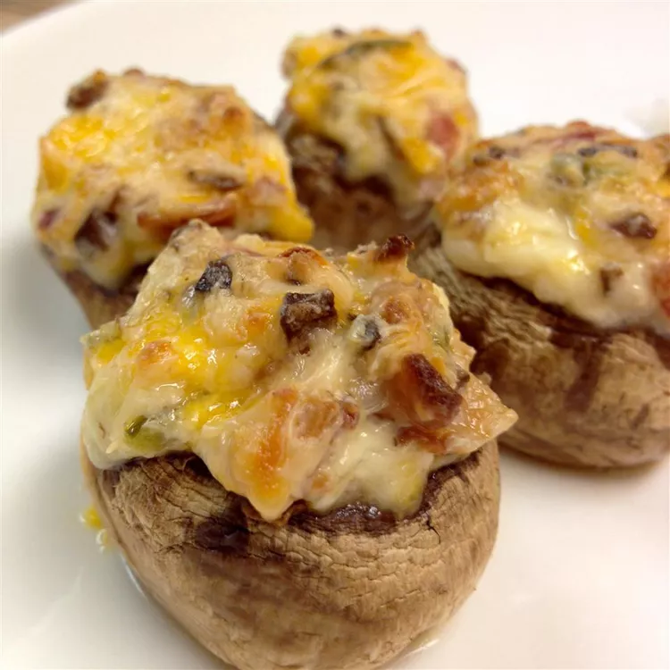

Jalapeno Popper Mushrooms

Description
My wife loves stuffed jalapenos and I like stuffed mushrooms, so I came up with this recipe that combines the two. Leave some of the seeds or ribs in the jalapeno for more heat! I like to use Neufchatel cheese and turkey bacon for a lower fat version -- it's just as tasty!
Ingredients
- 2 slices bacon
- cooking spray
- 1 ½ teaspoons olive oil
- 8 mushrooms, stems removed and chopped and caps reserved
- 1 clove garlic, minced
- 1 jalapeno pepper, ribs and seeds removed, finely chopped
- 1 (3 ounce) package cream cheese, softened
- 3 tablespoons shredded Cheddar cheese
- sea salt to taste
- ground black pepper to taste
Steps
- Place the bacon in a large, deep skillet, and cook over medium-high heat, turning occasionally, until evenly browned, about 10 minutes. Drain the bacon slices on a paper towel-lined plate. Crumble the bacon slices and set aside.
- Preheat an oven to 350 degrees F (175 degrees C). Spray a baking dish with cooking spray.
- Heat the olive oil in a skillet over medium heat. Stir in the chopped mushroom stems, garlic, and jalapeno; cook and stir until the mushrooms release moisture and soften, about 10 minutes. Transfer the mushroom mixture to a bowl, and stir in the cream cheese, cheddar cheese, and bacon. Season with salt and pepper. Spoon the cheese mixture generously into the reserved mushroom caps, and arrange the stuffed caps on the prepared baking dish.
- Bake in the preheated oven until cheese begins to brown, 15 to 20 minutes.